7 Regresión Espacial
Modelos de Regresión Espacial con error y lag espacial
7.1 Objetivos
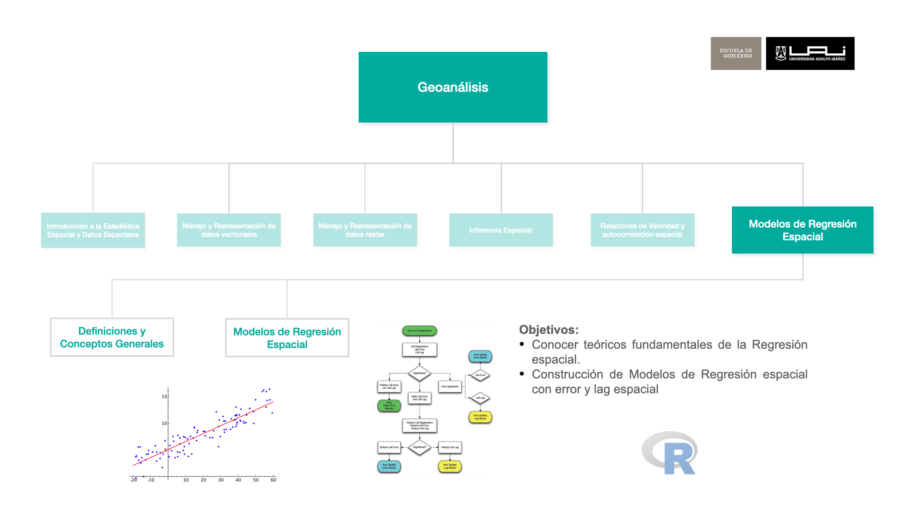
7.2 Fundamentos Teóricos de Regresión Espacial
7.2.1 Introducción
El análisis de regresión le permite modelar, examinar y explorar relaciones espaciales y puede ayudar a explicar los factores detrás de los patrones espaciales observados. Sin embargo, hay una motivación adicional importante: incorporar explícitamente la dependencia espacial en el modelo. Hay dos tipos comunes de regresión espacial: el modelo de error espacial (SEM) y el modelo de retraso espacial (SLM).
7.2.2 Tipos de Regresión
Modelo de error espacial:
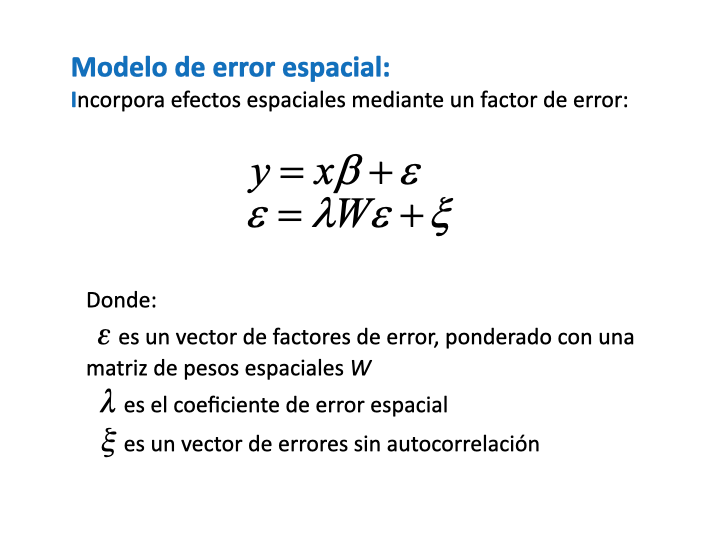
La principal razón para aplicar un modelo de error espacial es controlar la autocorrelación espacial general. Queremos hacerlo porque la autocorrelación espacial rompe el importante supuesto de que nuestros errores de regresión no están correlacionados.
Modelo de retraso (lag) espacial:
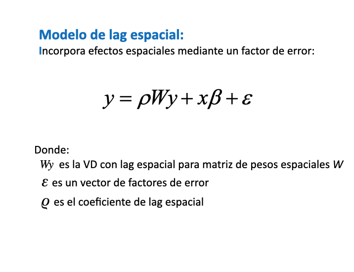
La principal razón para ejecutar un modelo de retraso espacial es modelar formalmente el contagio espacial. Estamos modelando el impacto de los resultados de nuestros vecinos en nuestro propio resultado.
7.3 Cálculo de Regresión Espacial
A continuación se realizarán dos modelos de regresión espacial, el primero con error espacial y la variable a explicar es el nivel socioecómico. En segundo caso la variable a explicar será el indicador de delitos violentos en la comuna de Las Condes, y se aplicará modelo error y lag espacial, además del un modelo que combina ambos llamado sacsar.
7.3.1 Pasos de Regresion Espacial
- Selección de Área de Estudio
- Crear Matriz de Vecindad
- Analizar la Autorrelación Espacial de y
- Estimar un modelo de regresión ordinario (OLS)
- Seleccionar tipo de Regresión Espacial
- Estimar Modelo de Regresión Espacial
7.3.2 Selección de Área de Estudio
Cargar Librerías
Selección de Área de Estudio
mi_comuna <- "LAS CONDES"
# ine
mz_comuna <- readRDS("data/censo/manzanas.rds") %>%
filter(NOM_COM == mi_comuna) %>%
st_transform(32719)# socioeconomicos
soc <- st_read("data/socioeconomicos/resultados/R13_ind_socioeconomicos.shp") %>%
st_drop_geometry() %>%
dplyr::select(ID_MANZ, ID_MANZCIT, IEJ, IEM, IPJ, IRH, IVI, ISV) Reading layer `R13_ind_socioeconomicos' from data source
`/Users/denisberroeta/Library/CloudStorage/OneDrive-UniversidadAdolfoIbanez/Goblab/BDPP_Geoanalisis/geoanalisis_book/data/socioeconomicos/resultados/R13_ind_socioeconomicos.shp'
using driver `ESRI Shapefile'
Simple feature collection with 55754 features and 20 fields
Geometry type: POLYGON
Dimension: XY
Bounding box: xmin: 249067.9 ymin: 6205212 xmax: 428360.8 ymax: 6356031
Projected CRS: WGS 84 / UTM zone 19Smz_comuna <- mz_comuna %>%
mutate(CODINE017 = as.character(CODINE017)) %>%
left_join(soc,by = c("CODINE017" = "ID_MANZ"))
# head(mz_comuna)Agregar Variable de Densidad Poblacional
Calcula la densidad poblacional por hetárea
mz_comuna <- mz_comuna %>%
mutate(densidad_hec = round(as.numeric(POBLACION/(st_area(.)/10000))))Eliminar Valores Nulos
Primero se cfrea una variable que se prentende explicar
mz_comuna <- mz_comuna %>%
mutate(nived = JH_ESC_P) %>% # Usaremos variable auxiliar de nivel educacional
filter(!is.na(nived))ggplot() +
geom_sf(data = mz_comuna, aes(fill = nived), color ="gray80",
alpha=1, size= 0.1)+
scale_fill_distiller(palette= "YlGnBu", direction = 1)+
ggtitle("Nivel Educacional del Jefe de Hogar") +
theme_bw() +
theme(plot.title = element_text(size=12))+
theme(panel.grid.major = element_line(colour = "gray80"),
panel.grid.minor = element_line(colour = "gray80"))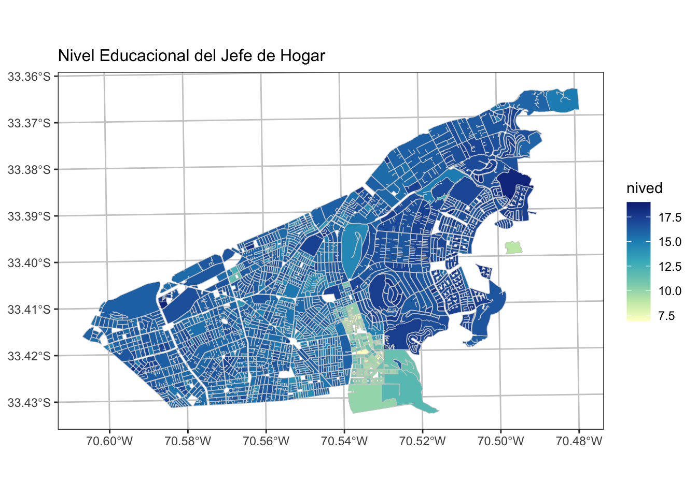
7.3.3 Crear Matriz de Vecindad
Definir un criterio de vecidad, para el caso de estudio es la distancia y asignar pesos espciales
Polígonos a puntos
ptos_comuna <- mz_comuna%>%
st_geometry() %>%
st_centroid()Calcular Vecinos Cercanos (k)
# vecinos mas cercanos (neighbours)
k <- 8 # numero de vecinos a buscar
nb_mzs <- knearneigh(ptos_comuna, k = k) %>% # por punto calcula K vecinos
knn2nb() # Knn a matriz de vecindadVisualización de la relaciones por cada Centroide
# matri< de vecindad a lines solo oara visualizaciñon
neighbors_sf <- as(nb2lines(nb_mzs, coords = st_geometry(ptos_comuna)), 'sf')
p_mv <- ggplot() +
geom_sf(data = mz_comuna, fill = NA, color ="gray60", alpha=1, size= 0.3)+
geom_sf(data = neighbors_sf, color = "red", alpha=0.5, size= 0.5)+
geom_sf(data = ptos_comuna, color ="#525252", alpha=1, size= 1)+
ggtitle("Relaciones de Vecindad por cada manzana (k = 8)") +
theme_bw() +
theme(plot.title = element_text(size=12))+
theme(panel.grid.major = element_line(colour = "gray80"),
panel.grid.minor = element_line(colour = "gray80"))
p_mv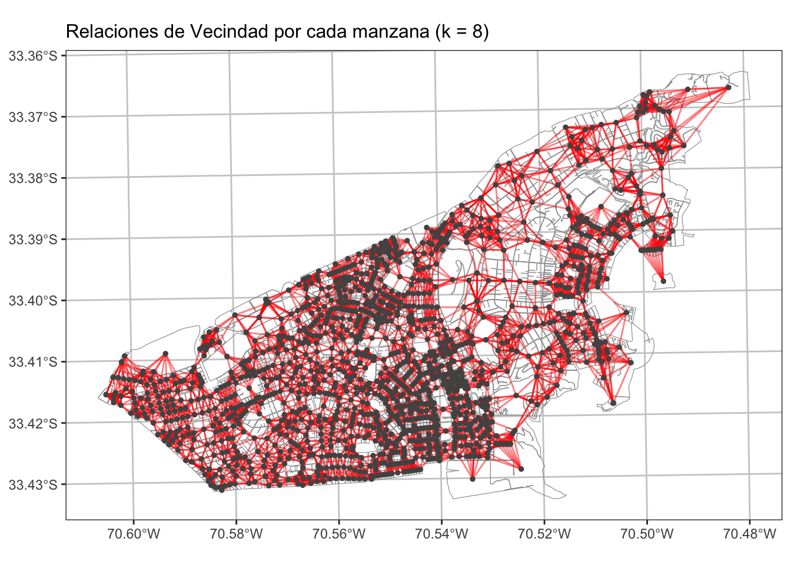
Asignar Pesos Espaciales por población
nb <-nb2listw(nb_mzs)
mz_comuna$id <- 1:nrow(mz_comuna)
nb$weights = lapply(1:nrow(mz_comuna), function(i)
mz_comuna$POBLACION[mz_comuna$id %in% nb$neighbours[[i]]] /
sum(mz_comuna$POBLACION[mz_comuna$id %in% nb$neighbours[[i]]]))7.3.4 Analizar la Autorrelación Espacial de y
A través del test estadítico índice de Moran analizar la autocorrelación espacial de la variable dependiente que se pretende explicar.
## Test de Moran
moran.test(mz_comuna$nived,listw=nb)
Moran I test under randomisation
data: mz_comuna$nived
weights: nb
Moran I statistic standard deviate = 54.42, p-value < 2.2e-16
alternative hypothesis: greater
sample estimates:
Moran I statistic Expectation Variance
0.7884021415 -0.0006635700 0.0002102337 7.3.5 Estimar un modelo de regresión ordinario (OLS)
Transformación de Variables
Revisión de la distribución de Variables
hist(mz_comuna$densidad_hec, breaks=100)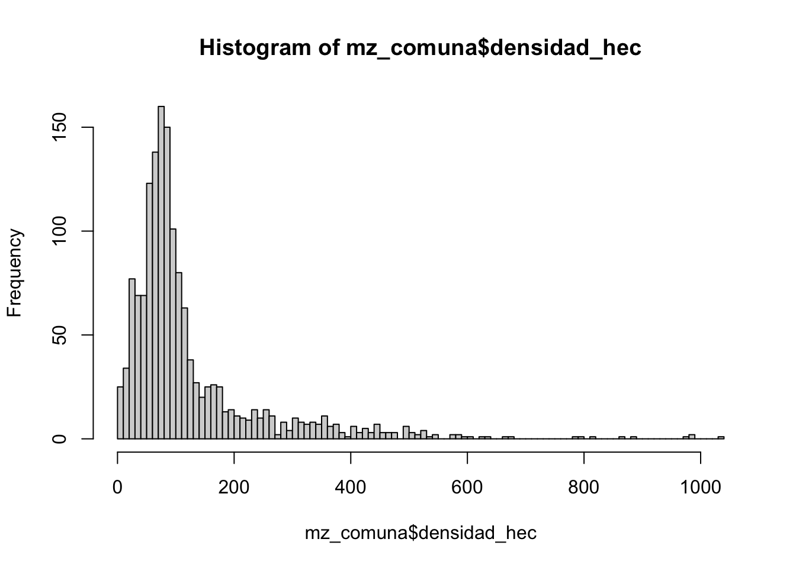
hist(log(mz_comuna$densidad_hec), breaks=100)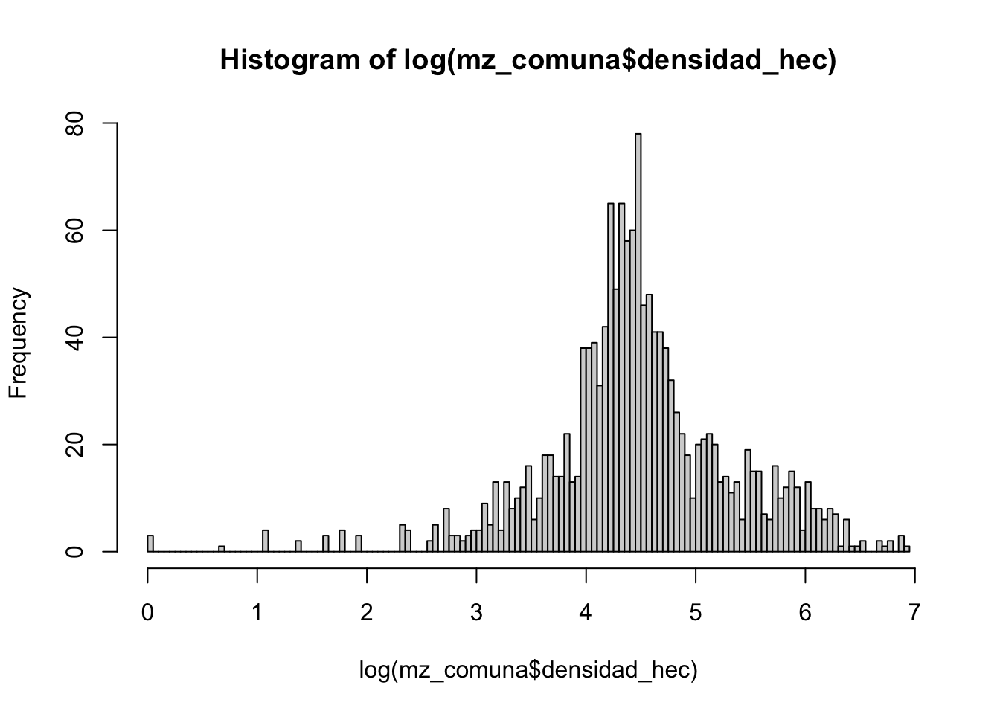
colnames <- c("nived","densidad_hec","ISV","IVI","IRH", "IEM")
# Ciclo para graficos agrupados
par(mfrow=c(3, 3))
for (v in colnames) {
hist(mz_comuna %>% st_drop_geometry() %>% pull(!!v), breaks=100, main=v, probability=TRUE, col="gray")
}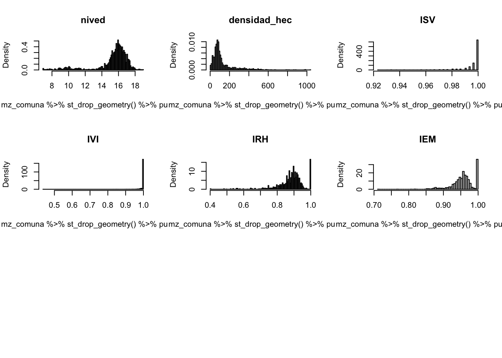
Transformaciones de Datos en modelos
Se pueden transformar los datos para obtener mejor linealidad entre sus relaciones entre las variables respuesta y predictivas. Las transformaciones más utilizadas son:
log(y)frente a x para relaciones exponencialeslog(y)contra log(x) para funciones de potencia;exp(y)contra x para relaciones logarítmicas;1/ycontra1/xpara las relaciones asintóticas;log(p/(1 - p))contra x para datos de proporción.
mz_comuna <- mz_comuna %>%
mutate(
l_nived = nived^3,
l_densidad_hec = log(densidad_hec),
l_ISV = log(ISV),
l_IVI = log(IVI),
l_IRH = log(IRH),
l_IEM = log(IEM)
)colnames <- c("l_nived","l_densidad_hec","l_ISV","l_IVI","l_IRH", "l_IEM")
# Ciclo para graficos agrupados
par(mfrow=c(3, 3))
com <- mz_comuna %>% st_drop_geometry()
for (v in colnames) {
hist(com %>% pull(!!v), breaks=100, main=v, probability=TRUE, col="gray")
}
par(mfrow=c(1, 1))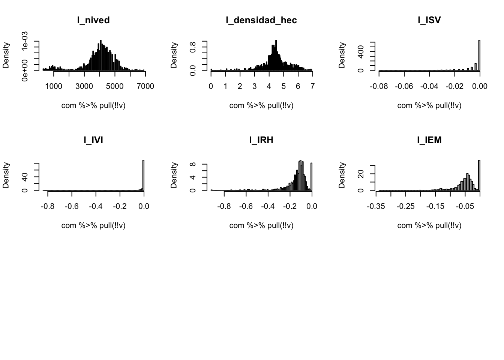
Modelo OLS
Modelo estadístico que relaciona funcionalmente dos variables de forma lineal (una recta o, en su versión generalizada, un plano o un hiperplano). El caso más simple contiene una variable respuesta (Y; i.e. lo que se quiere explicar o predecir), y una variable explicativa o predictor (X; i.e., variables que se usan para explicar o predecir Y). A veces estas variables también son llamadas dependiente e independiente.
Que exista una relación funcional significativa entre ambas variables no implica una causalidad, pero la puede sugerir.
y = b_0 + b_1*x_1 + b-_2*x_2 + b_3*x_3 + … + b_n*x_n+\varepsilon
mod_nived = lm(l_nived ~ l_densidad_hec + l_ISV + l_IVI + l_IRH + l_IEM,
data = mz_comuna)
summary(mod_nived)
Call:
lm(formula = l_nived ~ l_densidad_hec + l_ISV + l_IVI + l_IRH +
l_IEM, data = mz_comuna)
Residuals:
Min 1Q Median 3Q Max
-4019.5 -400.6 156.5 669.5 4062.1
Coefficients:
Estimate Std. Error t value Pr(>|t|)
(Intercept) 5151.28 151.42 34.020 < 2e-16 ***
l_densidad_hec -184.79 33.92 -5.448 5.94e-08 ***
l_ISV 21437.26 3120.22 6.870 9.35e-12 ***
l_IVI 9103.21 794.40 11.459 < 2e-16 ***
l_IRH 899.25 270.00 3.331 0.000888 ***
l_IEM 5105.64 779.96 6.546 8.09e-11 ***
---
Signif. codes: 0 '***' 0.001 '**' 0.01 '*' 0.05 '.' 0.1 ' ' 1
Residual standard error: 1012 on 1502 degrees of freedom
Multiple R-squared: 0.2021, Adjusted R-squared: 0.1995
F-statistic: 76.1 on 5 and 1502 DF, p-value: < 2.2e-16# plot(mod_nived)Output Modelo de Regresión
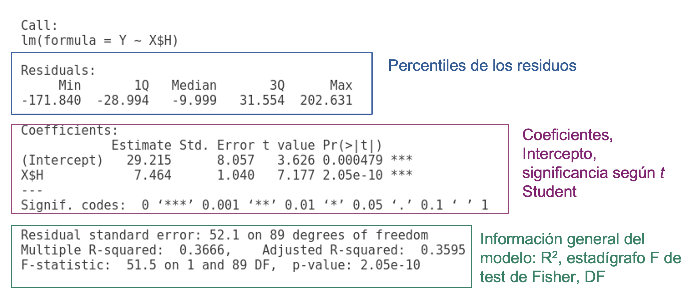
P - Valor p-value
p-value Probabilidad de que el la H0 sea verdad. P-valores significativos, ej., bajo alpha = 0.05, lleva a interpretar la probabilidad de que el modelo de regresión no explique una porción significativa de la varianza de Y es baja.
- H_0: El modelo NO explica la varianza de los datos Y
- H_1: El modelo SI explica la varianza de los datos Y
Coeficiente de determinación (R^2)
El coeficiente de determinación (o el cuadrado de la correlación de Pearson) es una de las métricas más utilizadas. Si bien esta es muy útil, pueden haber ocasiones donde valores altos de R² se obtienen cuando la dispersión o error de las predicciones es alta. Los valores van entre 0 y 1. Es una medida de ajuste relativa (porcentual), por lo que puede ser usada para comparar modelos entre sí.
Distribución F de Fisher
Comparar si hay diferencias significativas entre dos varianzas. En caso de las regresiones proporciona esencialmente una medida de la cantidad de variación que explica el modelo frente a la cantidad de variación no explicada (por grados de libertad restantes).
Valores de F altos significa que su modelo explica mucho más de la variación por parámetro que el error por grado de libertad restante.
Residuos
Los residuos son la diferencia entre los valores observados y los predichos (obs - pred). Los residuos se utilizan mucho en post-hoc tests (o tests para analizar los resultados de los modelos). Los residuos, por un lado, dan estimaciones de posibles sesgos del modelo.
Es muy importante que los residuos se distribuyan de manera aleatoria en el modelo.
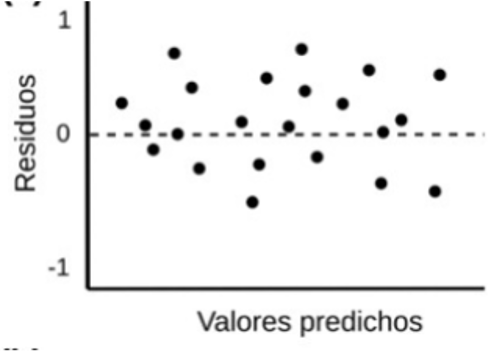
Análisis de Residuos
Para verificar que la relación a estudiar no genera residuos que se encuentren correlacionados espacialmente, extraemos los errores del modelo OLS y aplicamos el contraste de hipótesis usual, usando el estadístico de Moran (ó Moran’s I):
residuals_mod_nived<-residuals(mod_nived)
moran.test(residuals_mod_nived, listw = nb, randomisation = TRUE)
Moran I test under randomisation
data: residuals_mod_nived
weights: nb
Moran I statistic standard deviate = 37.878, p-value < 2.2e-16
alternative hypothesis: greater
sample estimates:
Moran I statistic Expectation Variance
0.5491099106 -0.0006635700 0.0002106614 moran_res <-moran.mc(residuals_mod_nived, nb, nsim=599)
plot(moran_res)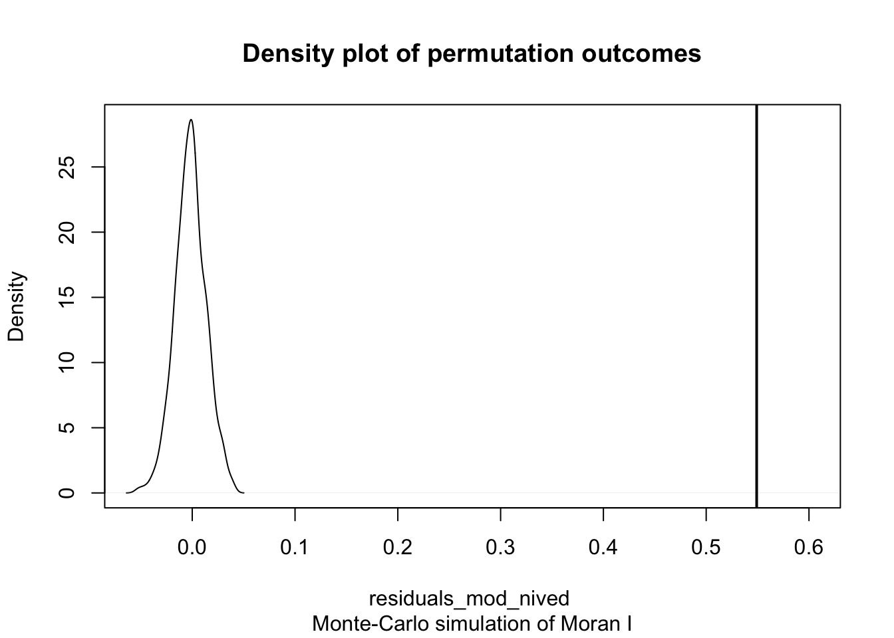
7.3.6 Seleccionar tipo de Regresión Espacial
## Test Moran residuos
lm.morantest(mod_nived,nb,alternative="greater")
Global Moran I for regression residuals
data:
model: lm(formula = l_nived ~ l_densidad_hec + l_ISV + l_IVI + l_IRH +
l_IEM, data = mz_comuna)
weights: nb
Moran I statistic standard deviate = 38.006, p-value < 2.2e-16
alternative hypothesis: greater
sample estimates:
Observed Moran I Expectation Variance
0.5491099106 -0.0013513898 0.0002097729 ## Tipo de dependencia
lm.LMtests(mod_nived,nb,test="all")
Lagrange multiplier diagnostics for spatial dependence
data:
model: lm(formula = l_nived ~ l_densidad_hec + l_ISV + l_IVI + l_IRH +
l_IEM, data = mz_comuna)
weights: nb
LMerr = 1422.7, df = 1, p-value < 2.2e-16
Lagrange multiplier diagnostics for spatial dependence
data:
model: lm(formula = l_nived ~ l_densidad_hec + l_ISV + l_IVI + l_IRH +
l_IEM, data = mz_comuna)
weights: nb
LMlag = 1791.5, df = 1, p-value < 2.2e-16
Lagrange multiplier diagnostics for spatial dependence
data:
model: lm(formula = l_nived ~ l_densidad_hec + l_ISV + l_IVI + l_IRH +
l_IEM, data = mz_comuna)
weights: nb
RLMerr = 0.47975, df = 1, p-value = 0.4885
Lagrange multiplier diagnostics for spatial dependence
data:
model: lm(formula = l_nived ~ l_densidad_hec + l_ISV + l_IVI + l_IRH +
l_IEM, data = mz_comuna)
weights: nb
RLMlag = 369.26, df = 1, p-value < 2.2e-16
Lagrange multiplier diagnostics for spatial dependence
data:
model: lm(formula = l_nived ~ l_densidad_hec + l_ISV + l_IVI + l_IRH +
l_IEM, data = mz_comuna)
weights: nb
SARMA = 1791.9, df = 2, p-value < 2.2e-167.3.7 Modelo de error Espacial
A pesar de que nuestro modelo goza de las características ideales asociadas a un modelo de regresión líneal estándar, hemos comprobado que los residuos de la regresión presentan autocorrelación espacial. Por tanto, para reconocer la existencia de esta estructura espacial en los errores, usamos el Modelo del Error Espacial. Este modelo se define como:
y=\beta_0+X\beta+\varepsilon
\varepsilon= \lambda W \varepsilon+ \xi
Donde X son las variables predictoras, mientras que W es la matriz de peso espacial. El parámetro \lambda es el indicador que mide la fuerza espacial de los residuos y los residuos de los vecinos.
En R, estimamos el modelo vía Maximum Likelihood (máxima verosimilitud) de la siguiente forma:
## SDEM Spatial Durbin Error Model
fit.err = spatialreg::errorsarlm(
l_nived ~ l_densidad_hec + l_ISV + l_IVI + l_IRH + l_IEM,
data = mz_comuna,
listw = spdep::nb2listw(nb_mzs),
etype = "error",
method = "eigen"
)# saveRDS(fit.err, "data/models/fit.err_nived.rds")
fit.err <- readRDS("data/models/fit.err_nived.rds")summary(fit.err, Nagelkerke=T)
Call:spatialreg::errorsarlm(formula = l_nived ~ l_densidad_hec + l_ISV +
l_IVI + l_IRH + l_IEM, data = mz_comuna, listw = spdep::nb2listw(nb_mzs),
etype = "error", method = "eigen")
Residuals:
Min 1Q Median 3Q Max
-4017.0145 -355.0942 4.1932 358.5864 2618.4853
Type: error
Coefficients: (asymptotic standard errors)
Estimate Std. Error z value Pr(>|z|)
(Intercept) 3871.718 149.503 25.8972 < 2.2e-16
l_densidad_hec 45.085 24.008 1.8779 0.0603881
l_ISV 2399.207 2113.385 1.1352 0.2562731
l_IVI 1617.466 472.923 3.4201 0.0006259
l_IRH 657.582 159.916 4.1120 3.922e-05
l_IEM 785.253 462.932 1.6963 0.0898370
Lambda: 0.85764, LR test value: 1349.6, p-value: < 2.22e-16
Asymptotic standard error: 0.014983
z-value: 57.241, p-value: < 2.22e-16
Wald statistic: 3276.5, p-value: < 2.22e-16
Log likelihood: -11897.29 for error model
ML residual variance (sigma squared): 363320, (sigma: 602.76)
Nagelkerke pseudo-R-squared: 0.67397
Number of observations: 1508
Number of parameters estimated: 8
AIC: 23811, (AIC for lm: 25158)En este modelo, las variables l_densidad_hec, l_ISV dejaron de ser significativa. Mientras que \lambda nos indica que el modelo tiene una fuerte correlación espacial en los residuos.
## Test Moran residuos
res.err=fit.err$residuals
moran.test(res.err,nb)
Moran I test under randomisation
data: res.err
weights: nb
Moran I statistic standard deviate = -2.1177, p-value = 0.9829
alternative hypothesis: greater
sample estimates:
Moran I statistic Expectation Variance
-0.0313896508 -0.0006635700 0.0002105203 7.3.8 Modelo de Lag Espacial
Consolidar Base Inicial
INE
mi_comuna <- "LAS CONDES"
# ine
mz_comuna <- readRDS("data/censo/manzanas.rds") %>%
filter(NOM_COM == mi_comuna) %>%
st_transform(32719)socioeconomicos
soc <- st_read("data/socioeconomicos/resultados/R13_ind_socioeconomicos.shp") %>%
st_drop_geometry() %>%
dplyr::select(ID_MANZ, ID_MANZCIT, IEJ, IEM, IPJ, IRH, IVI, ISV)Reading layer `R13_ind_socioeconomicos' from data source
`/Users/denisberroeta/Library/CloudStorage/OneDrive-UniversidadAdolfoIbanez/Goblab/BDPP_Geoanalisis/geoanalisis_book/data/socioeconomicos/resultados/R13_ind_socioeconomicos.shp'
using driver `ESRI Shapefile'
Simple feature collection with 55754 features and 20 fields
Geometry type: POLYGON
Dimension: XY
Bounding box: xmin: 249067.9 ymin: 6205212 xmax: 428360.8 ymax: 6356031
Projected CRS: WGS 84 / UTM zone 19SSii
sii <- st_read("data/sii/urbes.shp") %>%
filter(n_com == mi_comuna) %>%
st_set_crs(4326) %>%
st_transform(32719)Reading layer `urbes' from data source
`/Users/denisberroeta/Library/CloudStorage/OneDrive-UniversidadAdolfoIbanez/Goblab/BDPP_Geoanalisis/geoanalisis_book/data/sii/urbes.shp'
using driver `ESRI Shapefile'
Simple feature collection with 210662 features and 11 fields
Geometry type: POINT
Dimension: XY
Bounding box: xmin: -75.72058 ymin: -54.48149 xmax: -68.02319 ymax: -17.98338
Geodetic CRS: GCS_unknownsii_com <- st_intersection(sii, mz_comuna %>%
dplyr::select(CODINE017)) %>%
dplyr::select(CODINE017,oficinas: atractor) %>%
mutate(CODINE017 = as.character(CODINE017)) %>%
st_drop_geometry()
# mapview(sii, zcol ="atractor", cex=2)delitos
idel_violentos_LC <- readRDS("data/delitos/idel_violentos_LC.rds") %>%
dplyr::select(CODINE017, idelv) %>%
mutate(CODINE017 = as.character(CODINE017)) %>%
st_drop_geometry()Consolidación
mz_estudio <- mz_comuna %>%
mutate(CODINE017 = as.character(CODINE017)) %>%
left_join(soc,by = c("CODINE017" = "ID_MANZ")) %>%
left_join(sii_com,by = "CODINE017") %>%
left_join(idel_violentos_LC,by = "CODINE017") %>% drop_na()Selección de variables
mz_estudio <- mz_estudio%>%
dplyr::select(CODINE017, POBLACION, IEJ,IEM,IPJ, IRH, IVI, ISV,
vivienda, atractor,idelv) %>%
mutate(densidad_hec = round(as.numeric(POBLACION/(st_area(.)/10000))))7.3.8.1 Transformaciones
colnames <- c("idelv", "IEJ","IEM","IPJ", "IRH", "IVI", "ISV",
"vivienda", "atractor","densidad_hec")
# Ciclo para graficos agrupados
par(mfrow=c(3, 3))
for (v in colnames) {
hist(mz_estudio %>% st_drop_geometry() %>% pull(!!v), breaks=100, main=v, probability=TRUE, col="gray")
}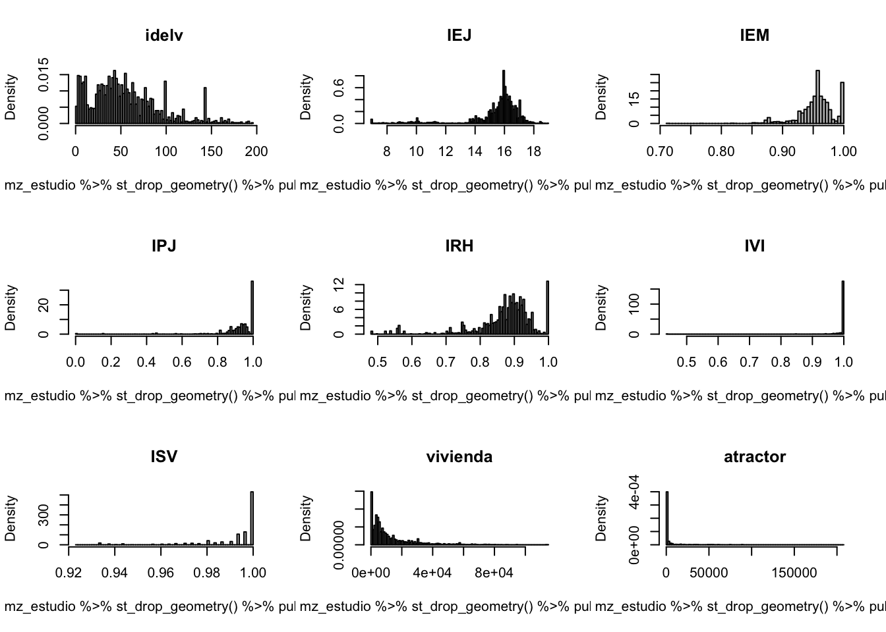
par(mfrow=c(1, 1))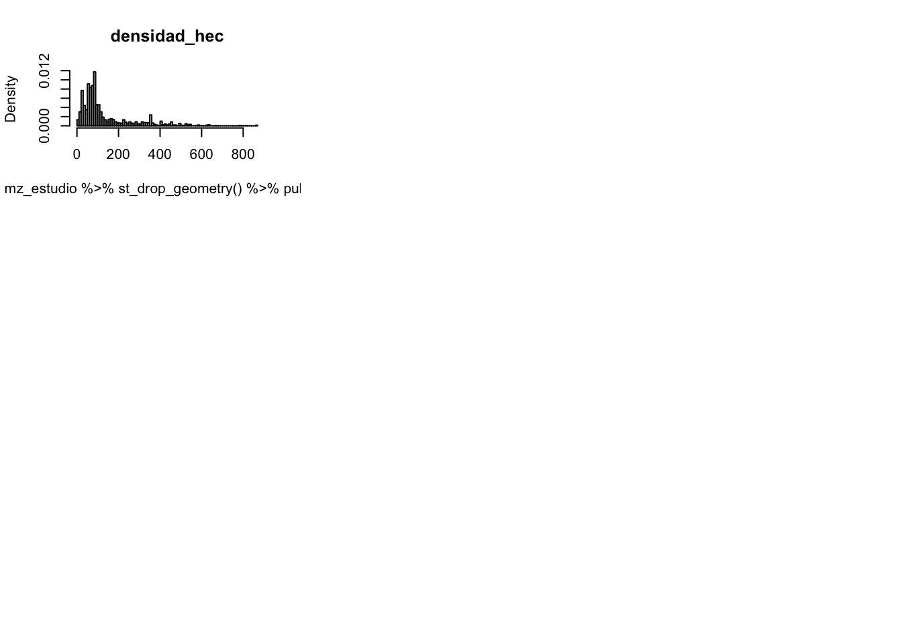
mz_estudio <- mz_estudio %>%
mutate(
rc_idelv = idelv^(1/3),
c_IEJ = IEJ **3,
c_IEM = IEM **3,
c_IPJ = IPJ **3,
c_IRH = IRH **3,
l_vivienda= log(ifelse(vivienda==0, 0.001, vivienda)),
l_atractor= log(ifelse(atractor==0, 0.001, atractor)),
densidad_hec= log(ifelse(densidad_hec==0, 0.001, densidad_hec))
)colnames <- c("rc_idelv","c_IEJ","c_IEM","c_IPJ","c_IRH",
"l_vivienda", "l_atractor", "densidad_hec")
# Ciclo para graficos agrupados
par(mfrow=c(3, 3))
for (v in colnames) {
hist(mz_estudio %>% st_drop_geometry() %>% pull(!!v), breaks=100, main=v, probability=TRUE, col="gray")
}
par(mfrow=c(1, 1))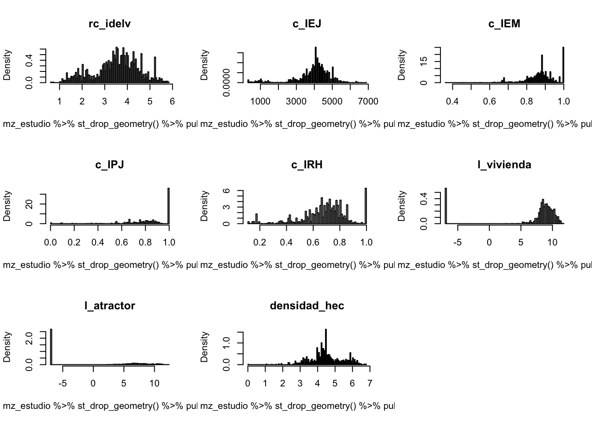
Modelo OLS
mod_idelv = lm(rc_idelv ~ c_IEJ + c_IEM + c_IPJ + c_IRH+
IVI+ ISV+l_vivienda+l_atractor+densidad_hec,
data = mz_estudio)
summary(mod_idelv)
Call:
lm(formula = rc_idelv ~ c_IEJ + c_IEM + c_IPJ + c_IRH + IVI +
ISV + l_vivienda + l_atractor + densidad_hec, data = mz_estudio)
Residuals:
Min 1Q Median 3Q Max
-2.40034 -0.39452 0.01851 0.42548 2.29776
Coefficients:
Estimate Std. Error t value Pr(>|t|)
(Intercept) 7.760e+00 1.163e+00 6.674 3.11e-11 ***
c_IEJ -4.257e-04 1.496e-05 -28.453 < 2e-16 ***
c_IEM -3.587e-01 1.893e-01 -1.895 0.05818 .
c_IPJ -3.641e-01 8.328e-02 -4.372 1.29e-05 ***
c_IRH 8.847e-01 8.526e-02 10.377 < 2e-16 ***
IVI 1.340e+00 4.486e-01 2.986 0.00286 **
ISV -5.726e+00 1.060e+00 -5.399 7.39e-08 ***
l_vivienda -1.216e-02 2.814e-03 -4.321 1.62e-05 ***
l_atractor 3.604e-02 1.934e-03 18.634 < 2e-16 ***
densidad_hec 4.177e-01 1.746e-02 23.923 < 2e-16 ***
---
Signif. codes: 0 '***' 0.001 '**' 0.01 '*' 0.05 '.' 0.1 ' ' 1
Residual standard error: 0.6542 on 2265 degrees of freedom
Multiple R-squared: 0.5603, Adjusted R-squared: 0.5585
F-statistic: 320.7 on 9 and 2265 DF, p-value: < 2.2e-16residuals_idelv <-residuals(mod_idelv)
moran.test(residuals_idelv, listw = spdep::nb2listw(nb_mzs), randomisation = TRUE)7.3.8.2 Autocorrelación Espacial
ptos_comuna <- mz_estudio%>%
st_geometry() %>%
st_centroid()
# vecinos mas cercanos (neighbours)
k <- 8 # numero de vecinos a buscar
nb_mzs <- knearneigh(ptos_comuna, k = k) %>% # por punto calcula K vecinos
knn2nb() # Knn a matriz de vecindad
nb <-nb2listw(nb_mzs)
mz_estudio$id <- 1:nrow(mz_estudio)
nb$weights = lapply(1:nrow(mz_estudio), function(i)
mz_estudio$POBLACION[mz_estudio$id %in% nb$neighbours[[i]]] /
sum(mz_estudio$POBLACION[mz_estudio$id %in% nb$neighbours[[i]]]))
## Test de Moranmoran.test(mz_estudio$rc_idelv,listw=nb)
Moran I test under randomisation
data: mz_estudio$rc_idelv
weights: nb
Moran I statistic standard deviate = 85.276, p-value < 2.2e-16
alternative hypothesis: greater
sample estimates:
Moran I statistic Expectation Variance
0.9486463950 -0.0004397537 0.0001238681 Error espacial
## SDEM Spatial Durbin Error Model
fit.errdurb_del=errorsarlm(rc_idelv ~ c_IEJ + c_IEM + c_IPJ + c_IRH+
IVI+ ISV+l_vivienda+l_atractor+densidad_hec,
data = mz_estudio,
listw=spdep::nb2listw(nb_mzs),
etype="error",method="eigen")summary(fit.errdurb_del, Nagelkerke=T)
Call:errorsarlm(formula = rc_idelv ~ c_IEJ + c_IEM + c_IPJ + c_IRH +
IVI + ISV + l_vivienda + l_atractor + densidad_hec, data = mz_estudio,
listw = spdep::nb2listw(nb_mzs), etype = "error", method = "eigen")
Residuals:
Min 1Q Median 3Q Max
-2.137774 -0.086091 0.010694 0.093117 0.703214
Type: error
Coefficients: (asymptotic standard errors)
Estimate Std. Error z value Pr(>|z|)
(Intercept) 4.7399e+00 7.0494e-01 6.7238 1.770e-11
c_IEJ -2.4073e-05 9.0324e-06 -2.6652 0.007695
c_IEM -2.3783e-02 6.2797e-02 -0.3787 0.704889
c_IPJ -1.4801e-02 3.0862e-02 -0.4796 0.631528
c_IRH -2.4129e-02 3.2158e-02 -0.7503 0.453051
IVI 9.2301e-03 1.6717e-01 0.0552 0.955967
ISV -1.6196e+00 6.7003e-01 -2.4171 0.015643
l_vivienda -1.0158e-03 9.0700e-04 -1.1200 0.262729
l_atractor 1.3705e-03 7.8268e-04 1.7510 0.079946
densidad_hec 4.0797e-02 8.1071e-03 5.0322 4.849e-07
Lambda: 0.96574, LR test value: 4744, p-value: < 2.22e-16
Asymptotic standard error: 0.0026757
z-value: 360.92, p-value: < 2.22e-16
Wald statistic: 130270, p-value: < 2.22e-16
Log likelihood: 114.3006 for error model
ML residual variance (sigma squared): 0.041559, (sigma: 0.20386)
Nagelkerke pseudo-R-squared: 0.94535
Number of observations: 2275
Number of parameters estimated: 12
AIC: -204.6, (AIC for lm: 4537.4)## Test Moran residuos
res.err=fit.errdurb_del$residuals
moran.test(res.err,nb)
Moran I test under randomisation
data: res.err
weights: nb
Moran I statistic standard deviate = 9.9861, p-value < 2.2e-16
alternative hypothesis: greater
sample estimates:
Moran I statistic Expectation Variance
0.1104488178 -0.0004397537 0.0001233061 Lag espacial
## SDM Spatial Durbin Lag Model
fit.durb=lagsarlm(rc_idelv ~ c_IEJ + c_IEM + c_IPJ + c_IRH+
IVI+ ISV+l_vivienda+l_atractor+densidad_hec,
data = mz_estudio,
listw=spdep::nb2listw(nb_mzs),
type="lag",method="eigen")summary(fit.durb, Nagelkerke=T)
Call:sacsarlm(formula = rc_idelv ~ c_IEJ + c_IEM + c_IPJ + c_IRH +
IVI + ISV + l_vivienda + l_atractor + densidad_hec, data = mz_estudio,
listw = spdep::nb2listw(nb_mzs), type = "sac", method = "eigen")
Residuals:
Min 1Q Median 3Q Max
-2.078202 -0.076293 0.002771 0.085556 0.736343
Type: sac
Coefficients: (asymptotic standard errors)
Estimate Std. Error z value Pr(>|z|)
(Intercept) 1.9442e+00 5.9304e-01 3.2784 0.001044
c_IEJ -3.7680e-05 7.6257e-06 -4.9413 7.762e-07
c_IEM -3.4337e-02 6.1710e-02 -0.5564 0.577925
c_IPJ -3.8772e-02 2.9724e-02 -1.3044 0.192092
c_IRH -2.6951e-03 3.1001e-02 -0.0869 0.930724
IVI -8.9824e-03 1.6229e-01 -0.0553 0.955860
ISV -1.5024e+00 5.5041e-01 -2.7296 0.006341
l_vivienda -1.3060e-03 9.0092e-04 -1.4496 0.147162
l_atractor 2.3484e-03 7.3308e-04 3.2035 0.001358
densidad_hec 4.7751e-02 7.3658e-03 6.4828 9.006e-11
Rho: 0.86956
Asymptotic standard error: 0.019016
z-value: 45.729, p-value: < 2.22e-16
Lambda: 0.59768
Asymptotic standard error: 0.052188
z-value: 11.452, p-value: < 2.22e-16
LR test value: 5011, p-value: < 2.22e-16
Log likelihood: 247.8068 for sac model
ML residual variance (sigma squared): 0.038922, (sigma: 0.19729)
Nagelkerke pseudo-R-squared: 0.95141
Number of observations: 2275
Number of parameters estimated: 13
AIC: -469.61, (AIC for lm: 4537.4)## Test Moran residuos
res.lag=fit.durb$residuals
moran.test(res.lag,nb)
Moran I test under randomisation
data: res.lag
weights: nb
Moran I statistic standard deviate = 3.1971, p-value = 0.0006942
alternative hypothesis: greater
sample estimates:
Moran I statistic Expectation Variance
0.0350557130 -0.0004397537 0.0001232666 Error y Lag espacial
## SAC Spatial Autocorrelation Model
fit.sac=sacsarlm(rc_idelv ~ c_IEJ + c_IEM + c_IPJ + c_IRH+
IVI+ ISV+l_vivienda+l_atractor+densidad_hec,
data = mz_estudio,
listw=spdep::nb2listw(nb_mzs),
type="sac",method="eigen")summary(fit.sac, Nagelkerke=T)
Call:sacsarlm(formula = rc_idelv ~ c_IEJ + c_IEM + c_IPJ + c_IRH +
IVI + ISV + l_vivienda + l_atractor + densidad_hec, data = mz_estudio,
listw = spdep::nb2listw(nb_mzs), type = "sac", method = "eigen")
Residuals:
Min 1Q Median 3Q Max
-2.078202 -0.076293 0.002771 0.085556 0.736343
Type: sac
Coefficients: (asymptotic standard errors)
Estimate Std. Error z value Pr(>|z|)
(Intercept) 1.9442e+00 5.9304e-01 3.2784 0.001044
c_IEJ -3.7680e-05 7.6257e-06 -4.9413 7.762e-07
c_IEM -3.4337e-02 6.1710e-02 -0.5564 0.577925
c_IPJ -3.8772e-02 2.9724e-02 -1.3044 0.192092
c_IRH -2.6951e-03 3.1001e-02 -0.0869 0.930724
IVI -8.9824e-03 1.6229e-01 -0.0553 0.955860
ISV -1.5024e+00 5.5041e-01 -2.7296 0.006341
l_vivienda -1.3060e-03 9.0092e-04 -1.4496 0.147162
l_atractor 2.3484e-03 7.3308e-04 3.2035 0.001358
densidad_hec 4.7751e-02 7.3658e-03 6.4828 9.006e-11
Rho: 0.86956
Asymptotic standard error: 0.019016
z-value: 45.729, p-value: < 2.22e-16
Lambda: 0.59768
Asymptotic standard error: 0.052188
z-value: 11.452, p-value: < 2.22e-16
LR test value: 5011, p-value: < 2.22e-16
Log likelihood: 247.8068 for sac model
ML residual variance (sigma squared): 0.038922, (sigma: 0.19729)
Nagelkerke pseudo-R-squared: 0.95141
Number of observations: 2275
Number of parameters estimated: 13
AIC: -469.61, (AIC for lm: 4537.4)## Test Moran residuos
res.sac=fit.sac$residuals
moran.test(res.sac,nb)
Moran I test under randomisation
data: res.sac
weights: nb
Moran I statistic standard deviate = 3.1971, p-value = 0.0006942
alternative hypothesis: greater
sample estimates:
Moran I statistic Expectation Variance
0.0350557130 -0.0004397537 0.0001232666